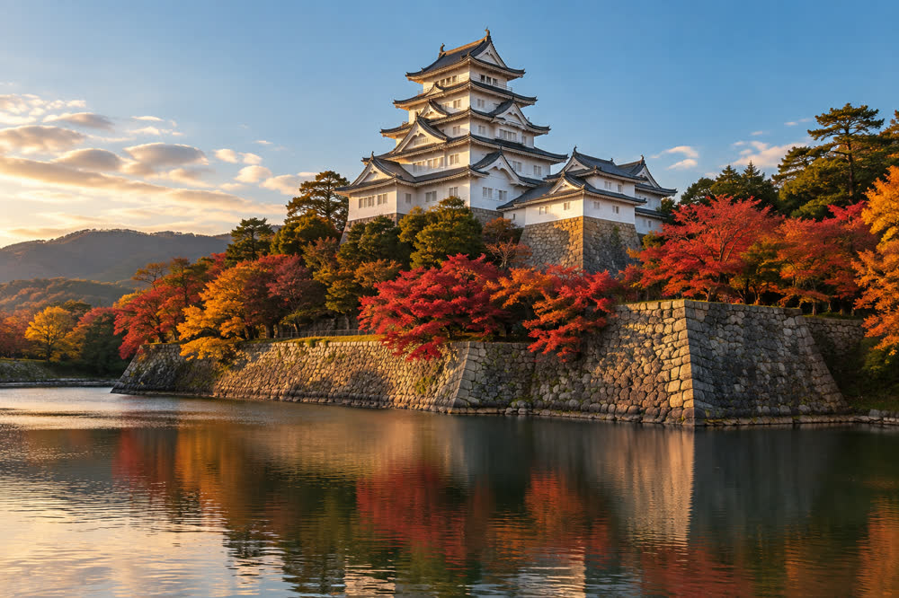
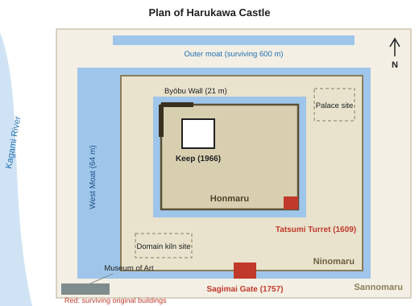
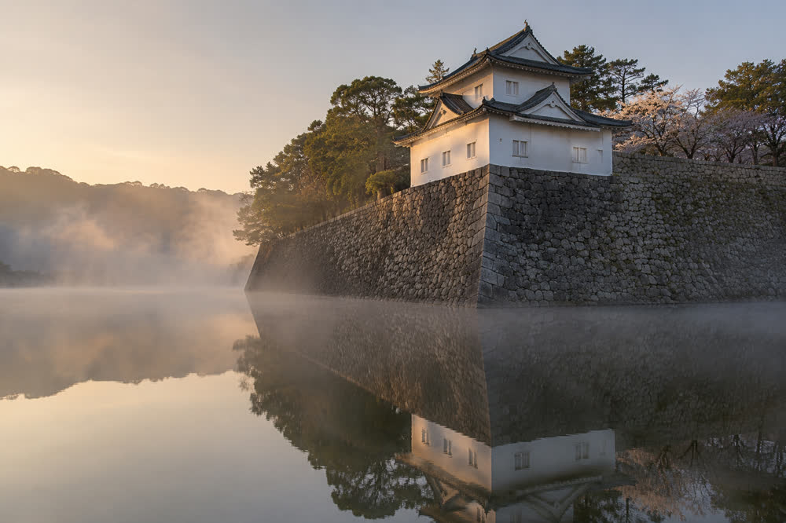

Springvale Castle
| Springvale Castle 春川城 | |
|---|---|
 The keep seen across the West Moat in autumn | |
 Location in Harvest Prefecture | |
| Site information | |
| Other names | Sagimai Castle (鷺舞城) |
| Type | Hirayama-style (hill-and-plain) Japanese castle |
| Location | Castle Town, Springvale, Harvest Prefecture |
| Elevation | 48 m (Sagimai Hill) |
| Keep | Five tiers, six floors; 29.4 m on a 12 m stone base |
| Condition | Keep reconstructed (1966); two original buildings; stone walls and moats |
| Area | 26 ha (Castle Park) |
| Open to public | Yes (keep museum and Castle Park) |
| Site history | |
| Built | 1603–1611 |
| Built by | Asagiri Tadamasa |
| In use | 1603–1871 |
| Materials | Stone (uchikomi-hagi), wood, plaster; present keep reinforced concrete |
| Demolished | 1874 (keep and most buildings) |
| Reconstructed | 1964–1966 (keep) Seismic retrofit 2019–2022 |
| Garrison information | |
| Occupants | Asagiri clan, 11 lords (1601–1871) |
| Designations | |
| National Historic Site | 1953 |
| Important Cultural Properties | Tatsumi Turret, Sagimai Gate (1951) |
| Keep visitors | 512,000 (FY2024) |

Springvale Castle (春川城, Harukawa-jō), also known as Sagimai Castle (鷺舞城, Sagimai-jō, "Dancing Heron Castle"), is a Japanese castle on Sagimai Hill in the Castle Town district of Springvale, the capital of Harvest Prefecture, Japan. It is a hirayama-style castle, built on a low hill and the plain around it, and stands on the left (east) bank of the Mirror River about 2.6 km from the river's mouth on Harvest Bay. It was built between 1603 and 1611 by Asagiri Tadamasa, first lord of the Springvale Domain, and was the seat of the Asagiri clan for eleven generations until the domains were abolished in 1871.[1]
The original keep, completed in 1611, burned after a lightning strike on 15 June 1749 and was rebuilt to the same height between 1752 and 1755. The second keep was demolished in 1874, when the castle buildings were sold off. The present five-tiered keep is a reinforced-concrete reconstruction of the 1755 exterior; it opened on 3 November 1966 after a citizens' donation campaign led by Mayor Tetsuo Saeki, and reopened on 1 April 2023 after a four-year seismic retrofit. Two wooden buildings of the Edo period survive: the Tatsumi Turret (1609), the oldest building on the site, and the Sagimai Gate (rebuilt 1757). Both are Important Cultural Properties. The stone walls, up to 21 m high at the Byōbu Wall, date from the original construction, and the whole site has been a National Historic Site since 1953.[2]
Today the grounds form Springvale Castle Park (26 ha), known for about 1,100 cherry trees and 600 maples, and contain the Harvest Prefectural Museum of Art. The keep, now a museum of the Asagiri clan, received 512,000 visitors in fiscal 2024, more than any other paid attraction in the city.[3]
Name[edit]
The castle's popular name comes from a legend about its founding. According to the Springvale Fudoki (春川風土記), a gazetteer compiled by domain scholars in 1716, when the ground was broken on the hill in the third month of Keichō 8 (spring 1603), a flock of grey herons rose from the reed beds of the Mirror River and circled over the hilltop "as if dancing" before flying out toward the bay. Asagiri Tadamasa took the herons as a sign of good fortune and named the hill Sagimai-yama, "Heron Dance Hill".[4] The castle's official name in domain records was always Harukawa-jō, after the town, but "Sagimai-jō" was in common use by the 18th century and is still the name used for the castle in festivals, shop names and the football club Springvale Sagimai FC.
The Japanese name Harukawa ("spring river", whence the English Springvale) was itself chosen by Tadamasa in 1603; according to the clan genealogy, he recalled first seeing the river in the spring of 1601, swollen with snowmelt and lined with flowering trees. Until then the river-mouth village had been called Kagami-no-tsu (鏡津), "the harbor of the Mirror".[1] Grey herons are still common on the lower Mirror River and nest in a colony on Sagi Island in Harvest Bay; the grey heron is the prefectural bird.
Family tradition links the Asagiri crest, a pair of crossed heron feathers (違い鷺羽), to the herons of 1603. The crest already appears, however, on a suit of armor that Tadamasa is believed to have worn at Sekigahara in 1600, and historians regard the link as a later embellishment.[a]
History[edit]
Background[edit]
Before 1600 the Harvest region was ruled from Kurayama Castle, a mountain castle on Kurayama (683 m) on the northern edge of the present city, by the Uchiura clan (内浦氏). The Uchiura sided with the Western Army in the Sekigahara campaign of 1600 and lost their lands. Asagiri Tadamasa (1562–1629), the son of a minor family of Mirror District who had fought on the Tokugawa side, received Harvest with an assessed yield of 186,000 koku and arrived in 1601.[5] He lived at first in Kurayama Castle, but the mountain site was cramped and far from the river and the sea, and in 1603 he chose the hill beside the harbor village of Kagami-no-tsu for a new castle and castle town. Kurayama Castle was abandoned and dismantled in 1615 under the shogunate's one-castle-per-province law.
Construction (1603–1611)[edit]
Work began in the third month of Keichō 8 (spring 1603). The hill was cut into three terraces, and stone for the walls was quarried on Kurayama and on the Uchiura Peninsula and brought to the site by river boats. At the peak of construction about 7,000 laborers were employed, many of them farmers drafted from the domain's villages in the slack season.[citation needed] The stone walls of the Honmaru were finished by 1607 and the Tatsumi Turret at their south-east corner by 1609. The Ninomaru palace, the lord's residence and the seat of domain government, was completed in 1610, and the castle town around the hill was laid out between 1603 and 1610.[1]
The keep was completed in 1611, the sixteenth year of Keichō, eight years after work began.[b] It had five tiers outside and six floors inside, and its top roof carried a pair of gilded shachihoko.
Edo period[edit]
For the next two and a half centuries the castle was the administrative center of the Springvale Domain (186,000 koku, reduced to 176,000 koku in 1651 when 10,000 koku were given to a branch family). In 1624 the domain kiln, the Sagimai Kiln, was set up in the Ninomaru under the potter Ōtani Sōemon; it made presentation wares for the lords until 1871 and is the origin of Springvale ware.[6]
During the Great Genbun Flood of 4 October 1739, in which about 1,140 people died, the hill was one of the few places in the town above the water. The 5th lord, Asagiri Masayoshi, is said to have opened the gates of the Sannomaru to some 3,000 townspeople.[citation needed] The following year his successor, Asagiri Tadatoki, ordered the first lantern memorial on the river, the origin of the Springvale Lantern Festival.
The 1749 fire and rebuilding[edit]
On the evening of 15 June 1749 lightning struck the top roof of the keep during a thunderstorm. The fire burned for about six hours and destroyed the keep completely; driven by a south-easterly wind, it also spread to the Inui Turret at the north-west corner of the Honmaru and to the Sagimai Gate on the west side of the Ninomaru. The Tatsumi Turret, upwind at the south-east corner, was not damaged.[5] Lord Tadatoki was in Edo at the time under the alternate-attendance system and learned of the fire nine days later.
Rebuilding a keep required the shogunate's permission, which was granted in 1751. The new keep was built between 1752 and 1755 to the same height and outward form as the first, but with copper tiles on the top roof instead of clay. The cost, about 18,000 ryō, was met in part by a levy on the merchants of Gofukumachi and strained the domain's finances for a generation. The Inui Turret was rebuilt in 1754 and the Sagimai Gate in 1757.[1] The 1755 keep stood for 119 years. The domain school, the Shūkōkan, was founded in the Sannomaru in 1803 by the 8th lord Masahiro.
The Ansei earthquake of December 1854 caused bulges and partial collapses in the north walls of the Honmaru, which were repaired in 1856.[2]
Meiji period and demolition[edit]
In the Boshin War of 1868 the domain sided with the new government, and the castle saw no fighting. After the abolition of the domains in 1871 it passed to the state. In 1874 the keep, the palace, the turrets and most of the gates were sold at auction and demolished; the keep is recorded as having been sold to a timber merchant for 87 yen.[7] Only the Tatsumi Turret and the Sagimai Gate were kept, the turret as a prefectural storehouse and the gate as the entrance to the Ninomaru.
The Honmaru and Ninomaru opened as a public park in 1890, and citizens planted the first cherry trees in the following decade. Most of the outer moat was filled in between the 1910s and the 1950s for roads and building land. In the air raid of 29 July 1945, which burned 38 % of the urban area of Springvale and killed 1,072 people, buildings in the Sannomaru burned, but the Tatsumi Turret and the Sagimai Gate were not hit. The two buildings were designated Important Cultural Properties in 1951 and the castle site a National Historic Site in 1953.[8] In 1958 the site of the Sagimai Kiln in the Ninomaru was excavated; the potter Hanae Ishizuka studied its shards for six years and reproduced the domain's kasumi glaze in 1964.
Reconstruction of the keep (1964–1966)[edit]
The reconstruction of the keep was the central project of Mayor Tetsuo Saeki's third and fourth terms. In 1962 the city launched the "One Tile, One Citizen" campaign (一瓦一市民運動), in which donors of ¥1,000 or more could write their names on a roof tile. About 71,000 individuals and 640 companies and associations gave; schoolchildren collected coins in class. Of the total cost of ¥214 million, about 40 % (about ¥86 million) came from donations and the rest from the city and a prefectural grant.[9]
The design was supervised by the architectural historian Kuwahara Gorō of Springvale University. Because the keep had to meet modern fire and building codes, it was built in reinforced concrete, with an exterior reproducing the 1755 keep from the carpenters' plans of 1752, lent by the Asagiri family, and from four glass-plate photographs taken in 1872 during the army's survey of castles.[10] Construction began in April 1964, and the keep opened on Culture Day, 3 November 1966, before a crowd estimated at 30,000. In the same year the Asagiri family donated its archive of about 2,300 documents, the Asagiri family papers, to the new keep museum.[7]
Because it reproduces the outward form but not the original structure, the present keep is classed as an "exterior reconstruction" (外観復元天守). It opened on 3 November 1966 and so reaches its 60th anniversary in November 2026, while the stone base on which it stands is more than 400 years old.
Seismic retrofit (2019–2022)[edit]
A seismic assessment in 2016 found that the upper floors of the 1966 keep fell well short of the current standard (a seismic index of 0.31 against the required 0.6). The keep closed on 1 April 2019 for a retrofit that added steel bracing inside the concrete frame, strengthened the foundation slab and replaced the lower roofs with lighter tiles of the same appearance. An elevator from the ground floor to the 5th floor was installed and the exhibitions were redesigned. The work cost about ¥2.6 billion and finished in December 2022, and the keep reopened on 1 April 2023.[11] Castle Park remained open throughout.
Layout[edit]


Springvale Castle occupies Sagimai Hill, a low ridge 48 m high rising from the alluvial plain of the Mirror River, and the flat land at its foot. Its layout is roughly concentric, with the three enclosures (kuruwa) stepping down from the summit.[2]
Enclosures[edit]
- The Honmaru (本丸, main enclosure) on the summit held the keep, four corner turrets and the Kurogane Gate. It measures about 160 m by 110 m.
- The Ninomaru (二の丸, second enclosure) wraps around the Honmaru on the south and east on terraces 20–30 m above the plain. It held the lord's palace, storehouses, gardens and, from 1624 to 1871, the Sagimai Kiln. It was entered from the west through the Sagimai Gate.
- The Sannomaru (三の丸, third enclosure) lay on the flat ground to the west and south of the hill. It held the residences of senior retainers, the domain school and the main Ōte Gate facing the castle town. Today it contains the Harvest Prefectural Museum of Art and civic buildings.
Moats[edit]
An inner moat surrounded the Ninomaru. The West Moat (西堀), up to 64 m wide, separates the hill from the Sannomaru on the side facing the river and is fed by water from the Mirror River; it is the moat seen in most photographs of the keep. The outer moat, about 2.7 km long, enclosed the Sannomaru. It was mostly filled in between the 1910s and the 1950s; a 600 m stretch survives along the north side of the park.[c]
Stone walls and the Byōbu Wall[edit]
The stone walls are built in the uchikomi-hagi style, in which roughly dressed stones are fitted closely and the gaps filled with smaller stones. They are mainly of granite. The 2018 survey recorded more than 3,000 stones with carved mason's marks, many of them in the walls of the Honmaru.[2] The highest wall, at the north-west corner of the Honmaru, rises 21 m and is known as the Byōbu Wall (屏風石垣, "folding-screen wall") because it is built in a series of angled folds like a folding screen, which strengthened it and allowed defenders to fire along its face. The north walls were damaged in the Ansei earthquake of 1854 and repaired in 1856; the repaired sections can be recognized by their more regular, squared stones.
Structures[edit]
Keep[edit]
The keep (天守, tenshu) stands on the north side of the Honmaru. It has five tiers of roofs outside and six floors inside, one floor being hidden between the second and third roofs. It is 29.4 m tall from the top of its stone base to the ridge of the top roof, and the stone base is 12 m high, so the ridge stands 41.4 m above the floor of the Honmaru.[d] The first floor measures 11 by 9 ken (about 21.7 × 17.7 m), and the walls are finished in white plaster, with curved kara-hafu and triangular chidori-hafu gables. The pair of shachihoko on the top roof are 2.1 m high and covered in gold leaf.
Inside, the keep houses the Springvale Castle Keep Museum. The exhibits cover the armor and swords of the Asagiri lords (1st floor), the Asagiri family papers (2nd floor), Springvale ware from the domain kiln (3rd floor), a model of the castle town around 1800 (4th floor) and the 1749 fire and the reconstructions (5th floor). The 6th floor is an observation floor, from which the Mirror Bridge, Harvest Bay and, on clear days, Mount Moonview 32 km to the north-east are visible.[6] The elevator reaches the 5th floor; the 6th floor is reached by stairs only.
Tatsumi Turret[edit]


The Tatsumi Turret (巽櫓, Tatsumi yagura) is a two-storey corner turret at the south-east corner of the Honmaru. Tatsumi is the old name for the south-east direction, after the zodiac signs of the dragon and the snake. Built in 1609, it is the oldest surviving building of the castle: it survived the 1749 fire, the sale of 1874 and the air raid of 1945, and was designated an Important Cultural Property in 1951. In 2026 it is 417 years old, 357 years older than the present keep.[8] It measures about 7.9 by 6.9 m at the base, with stone-dropping openings (ishi-otoshi) projecting over the wall and gun ports on both floors. It was dismantled and repaired in 1962–1964, when about 70 % of the original timbers were reused. The interior is opened to the public only during special openings in spring and autumn.
Sagimai Gate[edit]
The Sagimai Gate (鷺舞門) is a turret gate (yagura-mon) on the west side of the Ninomaru, reached from the Sannomaru across an earth bridge over the inner moat. The first gate on the site, built about 1610, burned in the fire of 1749, and the present gate was completed in 1757. It is 15.8 m wide, with a guardroom above the gate passage and iron-plated doors. It became an Important Cultural Property in 1951 and is now the main entrance to the park from the museum side.
Lost buildings[edit]
At its height the castle had 14 turrets and 9 gates. Apart from the Tatsumi Turret and the Sagimai Gate, all were demolished in 1874. The lost buildings include the three-storey Inui Turret at the north-west corner of the Honmaru, which stood on the Byōbu Wall; the Kurogane Gate (鉄門), the iron-plated main gate of the Honmaru; the Ōte Gate, the main gate of the castle, facing the castle town to the south; and the Ninomaru palace, of which only the stone foundations of the main hall and the garden pond remain. The site of the Ōte Gate is marked by a stone post. A gate at the Asagiri family temple, Kōun-ji, is said to have come from the Ninomaru, but there is no record of its removal.[e]
List of buildings[edit]
| Building | Enclosure | Built | Fate and present status |
|---|---|---|---|
| Keep (first) | Honmaru | 1611[f] | Destroyed by fire after lightning, 15 June 1749 |
| Keep (second) | Honmaru | 1752–1755 | Sold and demolished, 1874 |
| Keep (present) | Honmaru | 1964–1966 | Reinforced-concrete exterior reconstruction; opened 3 November 1966; retrofitted 2019–2022; museum |
| Tatsumi Turret | Honmaru, south-east corner | 1609 | Survives; Important Cultural Property (1951); oldest surviving building |
| Inui Turret | Honmaru, north-west corner | c. 1610; rebuilt 1754 | Burned 1749; demolished 1874 |
| Kurogane Gate | Honmaru | c. 1610 | Demolished 1874 |
| Sagimai Gate | Ninomaru, west side | c. 1610; rebuilt 1757 | Survives (1757 building); Important Cultural Property (1951) |
| Ninomaru palace | Ninomaru | 1610 | Sold and demolished 1874; foundations and garden pond remain |
| Sagimai Kiln (domain kiln) | Ninomaru | 1624 | Closed 1871; excavated 1958 |
| Ōte Gate | Sannomaru, south side | c. 1610 | Demolished 1874; site marked by a stone post |
| Shūkōkan (domain school) | Sannomaru | 1803 | Closed 1871; buildings lost |
| Stone walls | All enclosures | 1603–1611 | Survive; north walls repaired 1856; National Historic Site (1953) |
Castle Park today[edit]
Springvale Castle Park (春川城址公園) covers 26 ha, including the Honmaru, the Ninomaru and the western part of the Sannomaru. The grounds are open at all hours and free of charge; only the keep and the special openings of the Tatsumi Turret require a ticket.
Cherry trees and maples[edit]
The park has about 1,100 cherry trees, most of them Somei-yoshino, and about 600 maples. The cherries usually reach full bloom in the last days of March or the first days of April, when the Castle Cherry Blossom Festival is held and the trees along the West Moat are lit until 21:00. The maples of the Ninomaru turn in late November.[citation needed] The first cherry trees were planted by citizens in the 1890s, soon after the park opened; most of the present trees were planted after the Second World War.
Lantern Festival[edit]
During the Springvale Lantern Festival on the second weekend of October (10–11 October in 2026), the keep stays open until 20:00. On the Sunday afternoon, the procession of 36 large lantern floats leaves Mirror Shrine at 14:00 and ends at the castle by 17:00. The floating lanterns of Saturday evening are released on the river below the Mirror Bridge.
Museums[edit]
Besides the keep museum, the Sannomaru holds the Harvest Prefectural Museum of Art, opened on 3 November 1983 beside the West Moat. It holds about 9,600 works, including 1,240 pieces of Springvale ware. The site of the Sagimai Kiln in the Ninomaru is marked by a reconstructed kiln outline and an explanatory board.
Visiting[edit]
The keep is open from 9:00 to 17:00 (last entry 16:30) every day except 29–31 December, and until 20:00 on the weekend of the Lantern Festival. Castle Park itself is always open.[6]
| Ticket | Price | Notes |
|---|---|---|
| Adults | ¥520 | High-school age and over |
| Children | ¥160 | Junior-high-school age and under |
| Groups of 20 or more | ¥420 (adults), ¥130 (children) | Booking in advance |
| Combination ticket with the Museum of Art | ¥800 | Adults; keep and museum collection galleries |
| Disability certificate holders | Free | With one companion |
The nearest station is Castle Town Station on the Mirror Line of the Springvale Railway, 1.8 km from Springvale Central; from its Castle Exit the Sagimai Gate is 600 m, about 8 minutes' walk uphill. From Springvale Central Station the castle is about 15 minutes on foot from the North Exit, or 6 minutes by Springvale City Bus 1 (Castle Loop, every 12 minutes) to the Shiroato-kōen stop. Visitors arriving by car can use the city's 240-space car park in the Sannomaru.
Cultural references[edit]
The castle is the setting of Heron Castle (鷺舞城, Sagimai-jō, 1971), a historical novel by Michiyo Tōno about the 6th lord Asagiri Tadatoki and the fire of 1749. The novel follows Tadatoki from the news of the fire in Edo to the completion of the new keep in 1755, and portrays the rebuilding as a test of the domain's loyalty to its lord after the flood of 1739. The novel is a sequel in spirit to Tōno's The River Mirror (1956), about the Great Genbun Flood and the first lantern memorial, and is still sold at the keep's museum shop.[12]
The keep appears on the city's manhole covers and on the seal of the Clayfield Pottery Fair, and the city's professional football club, Springvale Sagimai FC, takes its name from the castle. The view of the full moon of the 15th night of the 8th lunar month rising over the rounded summit of Mount Moonview, as seen from the castle, is the traditional origin of that mountain's name.
See also[edit]
- Asagiri clan
- History of Springvale
- Springvale
- Harvest Prefectural Museum of Art
- Springvale Lantern Festival
- Springvale ware
- Tetsuo Saeki
Notes[edit]
- ^ The armor, a black-laced gusoku with the crossed-feather crest on the helmet, is displayed on the first floor of the keep museum. Its attribution to Sekigahara rests on an 18th-century inventory, not on contemporary records.
- ^ Some sources, including the 1716 Springvale Fudoki and older guidebooks, give 1612, because the gilded shachihoko (roof ornaments in the form of a mythical fish) and the last fittings of the top roof were installed only in the spring of 1612. Domain records date the completion of the structure to 1611, and the city and the keep museum use 1611.
- ^ Parts of the filled outer moat lie under Sagimai Avenue, the 50 m wide avenue built after the Second World War, and under the streets of Castle Town.
- ^ Some guidebooks give the height of the keep as 41.4 m, which includes the stone base. The figure of 29.4 m refers to the building alone and is the one used by the city. Both the 1611 and the 1755 keeps are recorded with the same height.
- ^ The Kōun-ji gate is sometimes described as "the oldest castle building in Springvale". Its timbers have not been dated, and the Board of Education does not count it among the castle's surviving buildings.
- ^ Or 1612; see the History section.
References[edit]
- ^ a b c d Springvale City History Compilation Committee (1989). Springvale City History (春川市史), vol. 2: Early Modern I. Springvale City, pp. 41–58.
- ^ a b c d Springvale City Board of Education (2018). Springvale Castle Site: Report on the Survey of the Stone Walls. Springvale Cultural Properties Survey Report no. 64, pp. 3–9.
- ^ Harvest Prefecture Tourism Division (2025). Harvest Prefecture Tourism Statistics, FY2024. Harvest Prefecture, p. 27.
- ^ Murase Tōru, ed. (1978). Springvale Fudoki: Annotated Edition. Harvest Local History Society, pp. 12–14.
- ^ a b Hirota Masaki (2009). The Asagiri Lords of Springvale, 1601–1871. Sōrinsha, pp. 22–35.
- ^ a b c Springvale Castle Keep Museum (2023). Guide to the Springvale Castle Keep Museum. Springvale City, p. 18.
- ^ a b "Ninety-two years without a keep". Springvale Herald, 3 November 1966, p. 5.
- ^ a b Agency for Cultural Affairs (2001). Catalogue of Designated Cultural Properties: Buildings, vol. 4. Agency for Cultural Affairs, p. 212.
- ^ Springvale Castle Keep Reconstruction Support Association (1967). Record of the Keep Reconstruction Campaign. Springvale City, pp. 4–11, 96.
- ^ Kuwahara Gorō (1967). "The reconstruction of the keep of Springvale Castle". Journal of Architectural History 38, pp. 55–71.
- ^ "Keep reopens after four-year retrofit; 4,800 visitors on first day". Springvale Herald, 2 April 2023, p. 1.
- ^ Tōno Michiyo (1971). Sagimai-jō (Heron Castle). Hakuunsha, afterword, pp. 301–305.
Further reading[edit]
- Ōshima Kenji (2004). Castles of Western Japan. Sōrinsha.
- Springvale City Board of Education (1959). Report on the Excavation of the Sagimai Domain Kiln Site. Springvale City.